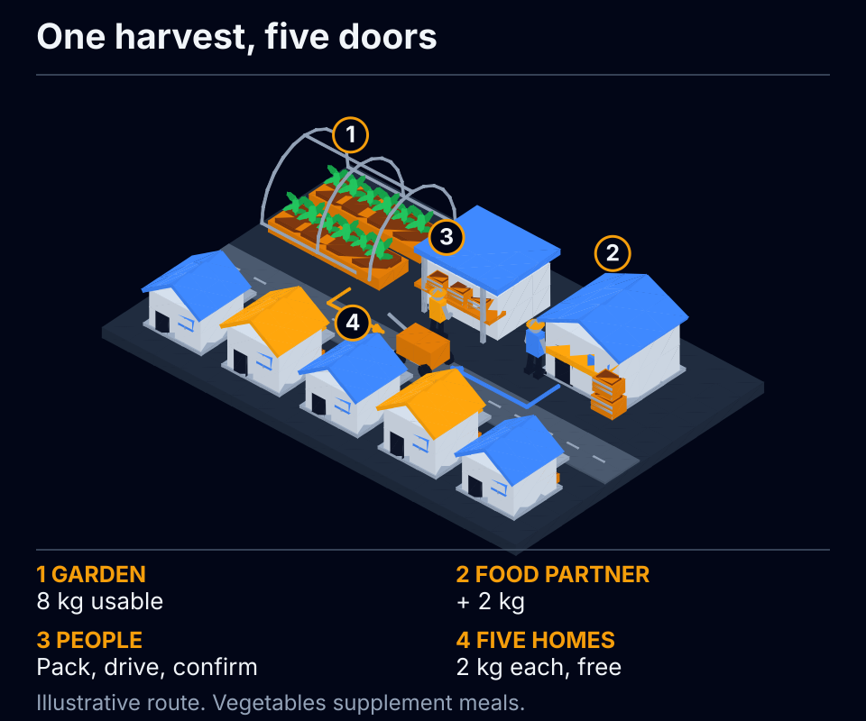
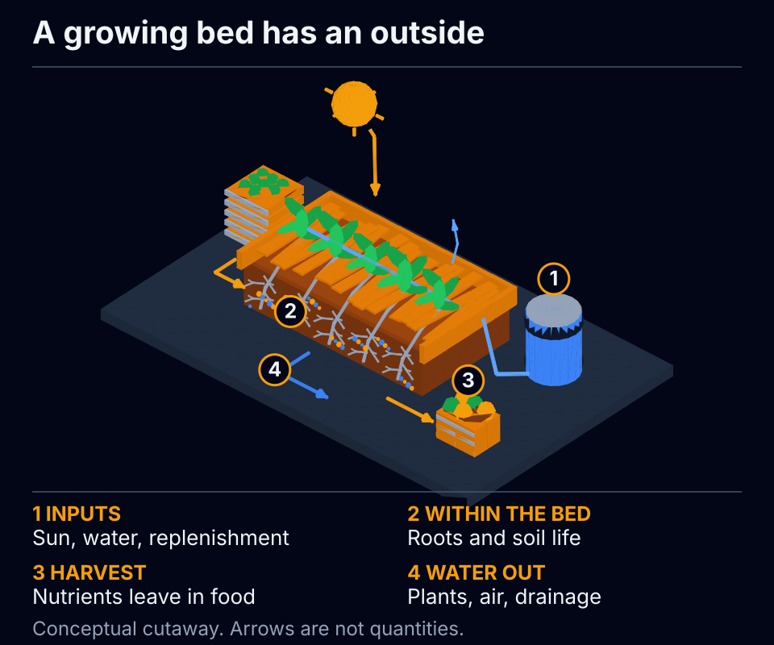
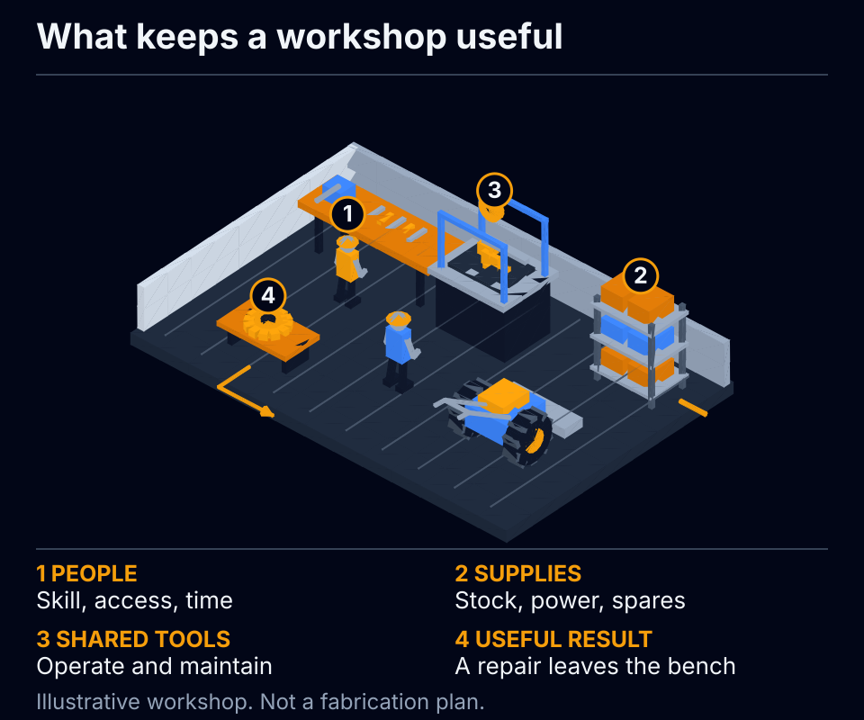

An illustrative neighborhood food route, from the garden through packing to five households. The buildings show relationships, not a map or a measured service area.
| Place or handoff | What the example requires |
|---|---|
| Garden | Inspect the crop and equipment; harvest and weigh eight usable kilograms after the stated loss. |
| Food partner | Supply the missing two kilograms before calling the delivery a success. |
| Packing and transport | People sort, pack, handle, and deliver the food through the partner’s existing arrangements. |
| Five households | Each receives two kilograms, free. Confirm receipt and whether people can use the food. This is a contribution to meals, not five complete diets. |

A soil cutaway separates exchanges inside the bed from inputs and outputs across its boundary. It is a conceptual view, not a construction plan or a measured soil profile.
| Connection | What crosses or stays within the boundary |
|---|---|
| Sunlight and water | Inputs reach the plants and soil; water also leaves through plants, evaporation, and drainage. |
| Roots and soil life | Plants supply sugars. Organisms transform and release nutrients; different partnerships do different jobs. |
| Compost and other replenishment | Returning organic matter supports the soil. Actual replacement needs depend on the crop, soil, and harvest. |
| Harvest | Food leaves the bed and carries nutrients with it. Recycling some material does not make the garden self-sufficient forever. |

An open workshop model brings shared tools together with people, materials, power, maintenance, and the repair that leaves the bench. The scene is not a wiring or fabrication plan.
| Dependency | Why it belongs in the picture |
|---|---|
| People | Training, safe operation, shared access, and time for the work remain necessary. |
| Materials and power | Stock, suitable supplies, and energy come from real arrangements outside the tool. |
| Maintenance and spares | Documentation, compatible replacement parts, and repair skill keep equipment useful over time. |
| Useful output | Judge the whole job and what it enables: a repair, a working tool, or a part that meets its intended requirements. |